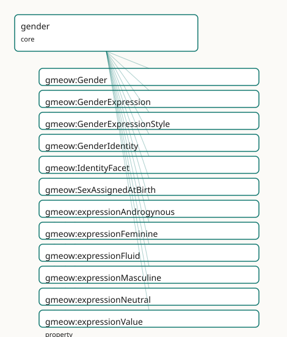

GMEOW Gender Module
- IRI: https://blackcatinformatics.ca/gmeow/slices/gender
- Tier: core
Group: core
What This Slice Covers
This slice owns 33 terms and contributes 59 mapping or projection rows. Use it when its terms match the native fact you want to preserve; use the linkage tables to see how those facts leave GMEOW for consumer vocabularies.
Dependencies
gmeow:slices/entitiesgmeow:slices/kernelgmeow:slices/namesgmeow:slices/observationsgmeow:slices/sexuality
Consumers
- Identity facets on persons (P16: core by commitment); the 7-axis orthogonality matrix.
Local Map

Examples
Self Asserted Facets
- Source:
slices/core/gender/examples/self-asserted-facets.ttl - GMEOW terms:
gmeow:GenderExpression,gmeow:GenderIdentity,gmeow:IdentityFacet,gmeow:Organization,gmeow:Person,gmeow:displayable,gmeow:expressionAndrogynous,gmeow:expressionValue,gmeow:facetSubject,gmeow:facetVantage
# SPDX-FileCopyrightText: 2026 Blackcat Informatics® Inc. <paudley@blackcatinformatics.ca>
# SPDX-License-Identifier: CC-BY-4.0
#
# Worked example: gender as reified, self-asserted, co-equal facets (, P9/P10).
# Each axis is a reified gmeow:IdentityFacet (the NameUsage relator idiom), never a
# flat enum column. Four tenets are visible here:
# • SELF-ASSERTION is the top authority — a self-asserted facet (selfAsserted
# true) outranks an external registry record (selfAsserted false), which is
# SUPPRESSED, never deleted (gmeow:displayable false, P10): kept for provenance,
# never leaked or displayed.
# • CO-EQUALITY — gender identity and gender expression are separate facets with
# no primary/preferred slot; expression is never inferred from identity.
# • SEX ≠ GENDER — gmeow:sexAssignedAtBirth is a RECORDED administrative datum,
# not an IdentityFacet, and implies nothing about identity or expression.
# • OPEN VOCABULARY — values are individuals (gmeow:genderNonBinary, …), never
# Person subclasses and never a forced enum.
@prefix gmeow: <https://blackcatinformatics.ca/gmeow/> .
@prefix ex: <https://blackcatinformatics.ca/gmeow/examples/gender/> .
ex:robin a gmeow:Person ;
gmeow:name "Robin"@en ;
gmeow:hasGenderIdentity ex:selfId , ex:registryId ;
gmeow:hasGenderExpression ex:expr ;
gmeow:sexAssignedAtBirth gmeow:saabFemale . # recorded datum — NOT identity
# A facet is an Observation: it records its gmeow:facetSubject (whose facet) and
# gmeow:facetVantage (who asserts it). When self-asserted, the vantage IS the
# subject — that self-reference is exactly what makes it the top authority.
ex:registry a gmeow:Organization ; gmeow:name "National Records Registry"@en .
# --- The self-asserted identity: subject is its own vantage; displayed.
ex:selfId a gmeow:GenderIdentity ;
gmeow:facetSubject ex:robin ;
gmeow:facetVantage ex:robin ;
gmeow:genderValue gmeow:genderNonBinary ;
gmeow:selfAsserted true ;
gmeow:displayable true .
# --- An external registry's conflicting record: its vantage is the REGISTRY,
# not Robin — kept for provenance but SUPPRESSED (P10) and never self-
# asserted, because self-assertion outranks an imported datum.
ex:registryId a gmeow:GenderIdentity ;
gmeow:facetSubject ex:robin ;
gmeow:facetVantage ex:registry ;
gmeow:genderValue gmeow:genderWoman ;
gmeow:selfAsserted false ;
gmeow:displayable false .
# --- Gender expression: a separate axis, never inferred from identity.
ex:expr a gmeow:GenderExpression ;
gmeow:facetSubject ex:robin ;
gmeow:facetVantage ex:robin ;
gmeow:expressionValue gmeow:expressionAndrogynous ;
gmeow:selfAsserted true .
Terms
Classes
| Term | Label | Definition |
|---|---|---|
gmeow:Gender |
Gender | A gender a person may identify with — a VALUE, never a gmeow:Person subclass. The set is open and culturally diverse; a gender not among the seed individuals i... |
gmeow:GenderExpression |
Gender Expression | A person's SELF-ASSERTED gender expression — how they present (a gmeow:GenderExpressionStyle value via gmeow:expressionValue). A distinct axis from gender iden... |
gmeow:GenderExpressionStyle |
Gender Expression Style | A style of gender expression — a VALUE pointed at by gmeow:expressionValue, never a subclass. Open: a style not seeded here is a fresh individual with rdfs:lab... |
gmeow:GenderIdentity |
Gender Identity | A person's SELF-ASSERTED gender identity — what they are — as a reified facet pointing (via gmeow:genderValue) to an open gmeow:Gender value. Independent of pr... |
gmeow:IdentityFacet |
Identity Facet | A reified, SELF-ASSERTED claim about an aspect of a person's identity — an observation in the universal claim stack: gender identity, gender expression,... |
gmeow:SexAssignedAtBirth |
Sex Assigned at Birth | A recorded sex-assigned-at-birth value pointed at by gmeow:sexAssignedAtBirth — a VALUE, never a subclass. Deliberately coarse and inclusive (incl. intersex);... |
Properties
| Term | Label | Definition |
|---|---|---|
gmeow:expressionValue |
expression value | The gmeow:GenderExpressionStyle value a gender-expression facet asserts (functional per facet). A predefined individual or a fresh one with rdfs:label; the sin... |
gmeow:genderValue |
gender value | The gmeow:Gender value a gender-identity facet asserts (functional PER FACET — one value each; multiplicity is expressed by multiple facets). The value is a gm... |
gmeow:hasGenderExpression |
has gender expression | Relates a person to a self-asserted gender-expression facet. Non-functional and contextual. MUST NOT be inferred from gmeow:hasGenderIdentity, gmeow:sexAssigne... |
gmeow:hasGenderIdentity |
has gender identity | Relates a person to a self-asserted gender-identity facet they hold. Non-functional and contextual — a person bears many co-equal identities; a superseded one... |
gmeow:intersexVariation |
intersex variation | An optional free-text note recording an intersex variation, for inclusivity where gmeow:sexAssignedAtBirth gmeow:saabIntersex is insufficient. Deliberately a p... |
gmeow:selfAsserted |
self-asserted | Whether an identity facet was asserted by the person themselves (true — the top authority) rather than recorded or inferred by a third party (false). Also usab... |
gmeow:sexAssignedAtBirth |
sex assigned at birth | The sex recorded for a person at birth (a gmeow:SexAssignedAtBirth value) — a RECORDED administrative datum, NOT a self-asserted identity and NOT a gufo Identi... |
Individuals
| Term | Label | Definition |
|---|---|---|
gmeow:expressionAndrogynous |
androgynous | The androgynous gender expression style — a stylistic presentation of gender through behavior, appearance, or self-presentation. |
gmeow:expressionFeminine |
feminine | The feminine gender expression style — a stylistic presentation of gender through behavior, appearance, or self-presentation. |
gmeow:expressionFluid |
fluid | The fluid gender expression style — a stylistic presentation of gender through behavior, appearance, or self-presentation. |
gmeow:expressionMasculine |
masculine | The masculine gender expression style — a stylistic presentation of gender through behavior, appearance, or self-presentation. |
gmeow:expressionNeutral |
neutral | The neutral gender expression style — a stylistic presentation of gender through behavior, appearance, or self-presentation. |
gmeow:genderAgender |
agender | The agender gender — a gender identity value that an agent may self-assert or be described by. |
gmeow:genderBigender |
bigender | The bigender gender — a gender identity value that an agent may self-assert or be described by. |
gmeow:genderDemiboy |
demiboy | The demiboy gender — a gender identity value that an agent may self-assert or be described by. |
gmeow:genderDemigirl |
demigirl | The demigirl gender — a gender identity value that an agent may self-assert or be described by. |
gmeow:genderGenderfluid |
genderfluid | The genderfluid gender — a gender identity value that an agent may self-assert or be described by. |
gmeow:genderGenderqueer |
genderqueer | The genderqueer gender — a gender identity value that an agent may self-assert or be described by. |
gmeow:genderMan |
man | The man gender — a gender identity value that an agent may self-assert or be described by. |
gmeow:genderNonBinary |
non-binary | The non binary gender — a gender identity value that an agent may self-assert or be described by. |
gmeow:genderQuestioning |
questioning | The questioning gender — a gender identity value that an agent may self-assert or be described by. |
gmeow:genderTwoSpirit |
Two-Spirit | The two spirit gender — a gender identity value that an agent may self-assert or be described by. |
gmeow:genderWoman |
woman | The woman gender — a gender identity value that an agent may self-assert or be described by. |
gmeow:saabFemale |
assigned female | The female sex assigned at birth — a category used to record sex assigned to a person at birth. |
gmeow:saabIntersex |
intersex | The intersex sex assigned at birth — a category used to record sex assigned to a person at birth. |
gmeow:saabMale |
assigned male | The male sex assigned at birth — a category used to record sex assigned to a person at birth. |
gmeow:saabUnknown |
unknown / not recorded | The unknown sex assigned at birth — a category used to record sex assigned to a person at birth. |
Linkages
- Rows: 59
- Projection profiles:
foaf,gedcom,schema-org - External vocabularies:
fhir,foaf,gedcom,gsso,homosaurus,schema,sosa,wd,wdt
| Source | Kind | Profile | Predicate/Relation | Target | Evidence |
|---|---|---|---|---|---|
gmeow:GenderIdentity |
equivalence | - |
skos:closeMatch | homosaurus:homoit0000571 | gmeow-gender.sssom.tsv; gmeow:eqGender001; confidence 0.8 |
gmeow:IdentityFacet |
equivalence | - |
skos:closeMatch | sosa:Observation | gmeow-observations.sssom.tsv; gmeow:eqObs020; confidence 0.85 |
gmeow:genderAgender |
equivalence | - |
skos:closeMatch | homosaurus:homoit0000021 | gmeow-gender.sssom.tsv; gmeow:eqGender012; confidence 0.9 |
gmeow:genderAgender |
equivalence | - |
skos:closeMatch | wd:Q505371 | gmeow-gender.sssom.tsv; gmeow:eqGender013; confidence 0.9 |
gmeow:genderBigender |
equivalence | - |
skos:closeMatch | wd:Q859614 | gmeow-gender.sssom.tsv; gmeow:eqGender019; confidence 0.85 |
gmeow:genderGenderfluid |
equivalence | - |
skos:closeMatch | homosaurus:homoit0000570 | gmeow-gender.sssom.tsv; gmeow:eqGender017; confidence 0.9 |
gmeow:genderGenderfluid |
equivalence | - |
skos:closeMatch | wd:Q18116794 | gmeow-gender.sssom.tsv; gmeow:eqGender018; confidence 0.9 |
gmeow:genderGenderqueer |
equivalence | - |
skos:closeMatch | gsso:000131 | gmeow-gender.sssom.tsv; gmeow:eqGender015; confidence 0.85 |
gmeow:genderGenderqueer |
equivalence | - |
skos:closeMatch | homosaurus:homoit0001921 | gmeow-gender.sssom.tsv; gmeow:eqGender014; confidence 0.85 |
gmeow:genderGenderqueer |
equivalence | - |
skos:closeMatch | wd:Q12964198 | gmeow-gender.sssom.tsv; gmeow:eqGender016; confidence 0.85 |
gmeow:genderMan |
equivalence | - |
skos:closeMatch | gsso:000370 | gmeow-gender.sssom.tsv; gmeow:eqGender007; confidence 0.85 |
gmeow:genderMan |
equivalence | - |
skos:closeMatch | homosaurus:homoit0001008 | gmeow-gender.sssom.tsv; gmeow:eqGender008; confidence 0.8 |
gmeow:genderNonBinary |
equivalence | - |
skos:closeMatch | gsso:000395 | gmeow-gender.sssom.tsv; gmeow:eqGender010; confidence 0.9 |
gmeow:genderNonBinary |
equivalence | - |
skos:closeMatch | homosaurus:homoit0001048 | gmeow-gender.sssom.tsv; gmeow:eqGender009; confidence 0.9 |
gmeow:genderNonBinary |
equivalence | - |
skos:closeMatch | wd:Q48270 | gmeow-gender.sssom.tsv; gmeow:eqGender011; confidence 0.9 |
gmeow:genderTwoSpirit |
equivalence | - |
skos:closeMatch | gsso:007398 | gmeow-gender.sssom.tsv; gmeow:eqGender021; confidence 0.9 |
gmeow:genderTwoSpirit |
equivalence | - |
skos:closeMatch | homosaurus:homoit0001480 | gmeow-gender.sssom.tsv; gmeow:eqGender020; confidence 0.9 |
gmeow:genderTwoSpirit |
equivalence | - |
skos:closeMatch | wd:Q301702 | gmeow-gender.sssom.tsv; gmeow:eqGender022; confidence 0.85 |
gmeow:genderValue |
equivalence | - |
skos:closeMatch | foaf:gender | gmeow-gender.sssom.tsv; gmeow:eqGender003; confidence 0.6 |
gmeow:genderValue |
equivalence | - |
skos:closeMatch | schema:gender | gmeow-gender.sssom.tsv; gmeow:eqGender002; confidence 0.7 |
gmeow:genderValue |
equivalence | - |
skos:closeMatch | wdt:P21 | gmeow-gender.sssom.tsv; gmeow:eqGender004; confidence 0.85 |
gmeow:genderWoman |
equivalence | - |
skos:closeMatch | gsso:000369 | gmeow-gender.sssom.tsv; gmeow:eqGender005; confidence 0.85 |
gmeow:genderWoman |
equivalence | - |
skos:closeMatch | homosaurus:homoit0001509 | gmeow-gender.sssom.tsv; gmeow:eqGender006; confidence 0.8 |
gmeow:saabFemale |
equivalence | - |
skos:closeMatch | wd:Q6581072 | gmeow-gender.sssom.tsv; gmeow:eqGender025; confidence 0.8 |
| ... | ... | ... | ... | ... | 35 more rows |
Guide
Gender — self-asserted identity facets, never inferred, never erased
Slice:
https://blackcatinformatics.ca/gmeow/slices/gender· tier: core The sharedIdentityFacetbase, and the gender-identity / gender-expression / sex-assigned-at-birth axes of the seven-axis orthogonality matrix.
Most schemas have a gender column: an enum, single-valued, often silently inferred from a
title or a pronoun. GMEOW refuses every part of that. A gender is a reified, self-asserted
claim — an IdentityFacet, the same relator idiom as names' NameUsage — never a bare
property; the value space is an open vocabulary of individuals, never an enum and never a
Person subclass (Principle 9: inclusive without overtyping); a person bears many co-equal
facets with deliberately no primary/preferred term, because a primary-gender slot encodes
the same hierarchy a primary-name slot does (Principle 9, anti-colonial in both directions —
the seeds neither force Western categories nor appropriate culturally-specific ones:
Two-Spirit carries a scope note restricting it to self-referential Indigenous North American
use). Self-assertion is the top authority (Principle 9): a facet the person asserted
outranks any registry or import, and is never silently overwritten.
A superseded label is suppressed, never erased (Principle 10): gmeow:displayable false
— the deadname analog — keeps the history while preventing the leak. And none of this is
optional: identity slices sit in core by commitment (Principle 16) — GMEOW refuses to
make respectful identity an extension someone might not load.
The seven-axis orthogonality matrix
Seven identity axes span three modules — GenderIdentity, GenderExpression, and
SexAssignedAtBirth here; SexualOrientation and RomanticOrientation in the
sexuality slice; PronounSet and Honorific in names — and they are pairwise
disjoint with no inferential bridge in any direction. Address ≠ identity: pronouns say how
a person is addressed, never what they are. Sex ≠ gender: sex-at-birth is a recorded
administrative datum, not an identity. Nothing infers expression from identity, orientation
from gender, or anything from anything. The disjointness is a reasoner theorem
(owl:AllDisjointClasses over both the facet classes and their value spaces, OWL 2
EL-visible —); the bridge-absence half, which OWL cannot say, stays a
closed-world lint (tests/test_identity_orthogonality.py).
The facet base
gmeow:IdentityFacet
The shared root: a reified, self-asserted claim about an aspect of a person's identity — a
gufo:Relator and a gmeow:Observation in the universal claim stack,
mediating the person (facetSubject) and an open identity value, with the asserting agent
as facetVantage. Carries the optional validFrom/validUntil clocks and the
gmeow:displayable control. The sexuality slice's two orientation facets subclass this same
base.
gmeow:selfAsserted
The authority marker: true when the person asserted the facet themselves (the top
authority), false for a third-party record. Non-functional — a multi-source merge carries
both, coexisting rather than contradicting (Principle 9's standpoint stance). Also usable as
a statement-level RDF 1.2 annotation on a quoted claim.
The three axes in this slice
gmeow:GenderIdentity · gmeow:hasGenderIdentity · gmeow:genderValue
What a person is. hasGenderIdentity is non-functional — bigender is two co-equal
facets, genderfluid and transition are facets over time — and MUST NOT be inferred from
pronouns, honorifics, expression, or sex-at-birth. genderValue is functional per facet
(one value each; multiplicity is more facets) and is the single path to the value: there
is deliberately no flat gmeow:gender shortcut to grow stale.
gmeow:GenderExpression · gmeow:hasGenderExpression · gmeow:expressionValue
How a person presents — a separate axis: a masculine-presenting woman and a
feminine-presenting man are directly expressible with no tension, because expression is
never derived from identity (or vice versa). Same shape: non-functional bearer property,
functional-per-facet value path to an open GenderExpressionStyle.
gmeow:sexAssignedAtBirth
A recorded administrative datum — not an IdentityFacet, not self-asserted, never
equated with or implied by gender identity/expression. Non-functional so a correction and a
prior record coexist (multi-source honesty). Historical/genealogical records keep external
gedcom:sex; this is GMEOW's native, value-vocabulary-backed term.
gmeow:intersexVariation
An optional free-text note for inclusivity where gmeow:saabIntersex alone is insufficient.
Deliberately a plain note: GMEOW does not model clinical sex characteristics or a DSD
taxonomy — that depth would be overtyping in exactly the sense Principle 9 forbids.
The value vocabularies
gmeow:Gender · gmeow:GenderExpressionStyle · gmeow:SexAssignedAtBirth
Open value vocabularies of individuals under gufo:QualityValue — never Person
subclasses, never a closed enum. The seeds (woman, man, non-binary, agender, genderfluid,
genderqueer, bigender, demigirl, demiboy, Two-Spirit, questioning; feminine through neutral;
the four coarse sex-at-birth values) are anchors, not a fence: an identity not seeded is
a fresh individual carrying rdfs:label — the names module's custom-PronounSet idiom —
never a flat literal. The three value spaces are themselves pairwise disjoint, so a raw
value can never cross axes.
ex:robin a gmeow:Person ;
gmeow:hasGenderIdentity ex:facetNb , ex:facetPrior .
ex:facetNb a gmeow:GenderIdentity ; # current, self-asserted
gmeow:genderValue gmeow:genderNonBinary ;
gmeow:selfAsserted true .
ex:facetPrior a gmeow:GenderIdentity ; # superseded — suppressed, kept
gmeow:genderValue gmeow:genderMan ;
gmeow:displayable false . # Principle 10: never deleted
Boundaries, solver, and alignment
Closed-world cardinality ("exactly one value per facet", "exactly one subject") is
deliberately not OWL — it is SHACL's job (phase 3), keeping the reasoned core
EL-friendly (Principle 12's boundary discipline: the ontology states the relata, the gates
check the counts). Alignment is lossy by design: GSSO, Homosaurus, Wikidata, schema.org,
FOAF and HL7/FHIR mappings live in mappings/gmeow-gender.sssom.tsv, and flat targets like
schema:gender receive a documented downcast — the reified, self-asserted, co-equal
machinery is canonical and survives only here (Principle 4). The full rationale is in
identity-mapping.md.
Dependencies
Depends on kernel, entities, names (the displayable control and the relator idiom),
observations (the claim stack), and sexuality (the matrix axioms span both). Consumed by
every person-bearing dataset: identity facets on persons are core by commitment
(Principle 16).